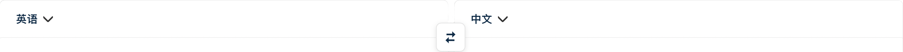
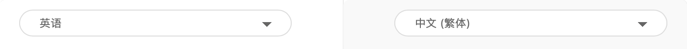
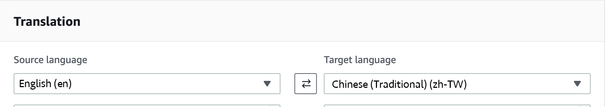

Google believes that "translation" plays an important role in the flow of information on the world wide web, as 50% of the content on the world wide web is in English, but only 20% of the population speaks English as their primary language. Therefore, making online translation faster and better has become one of the key factors to accelerate the development of the Internet.
By now, Google Translate has accumulated an amazing amount of usage, with an average of over 1 billion translations per day and over 1 billion active users per month.
Ten years ago, Google Translate used Phrase-Based Machine Translation as the main computing method, cutting sentences into small language units, then translating each language block, and finally combining these language blocks into a target language that looks like a sentence. Finally, these language blocks are combined into a target language that looks like a sentence. At the same time, Google has also built a translation model by collecting search indexes, and has collected and translated billions of web documents, including official documents, news articles, books, and so on. However, there is a limit to the translation by machine, and the semantic meaning of slightly more complex sentences cannot be effectively linked.
However, since 2015, Google Translate has been running a project with TensorFlow as its core, introducing Google Neural Machine Translation (GNMT), an end-to-end learning framework that allows the entire sentence to be translated as a unit, and allows the system to learn from millions of data. The system learns from millions of examples to improve the quality of translation. Each GNMT model requires more than 100 million training cases and 2-3 weeks of training time to complete. But so far the project which was expected to take 36 months to complete, has exceeded expectations, taking only 13.5 months to reach its goal.
谷歌
谷歌認為「翻譯」在全球網路資訊流通扮演了重要角色，像目前全球網路上有 50% 內容以英文呈現，但卻只有 20% 人口以英語為其主要語言，因此讓線上翻譯變得更快、更好，就成了加速網路發展的關鍵因素之一。
而到現在，Google Translate 已經累積了驚人的使用量，每天平均翻譯量超過 10 億次，並且每月也有超過 10 億的活躍使用者使用。
Julie Cattiau 進一步解釋，十年前 Google Translate 是以片語式機器翻譯（Phrase-Based Machine Translation）作 為主要運算方式，將句子切割成小塊語言單位，之後針對各別語言塊進行翻譯，最後再將這些語言塊組合成看似句子的目標語言。在此同時，Google 也以收集搜尋索引來建構翻譯模型，收集並翻譯了數十億的網路文件，包含官方文件、新聞文章、書籍等。但片語式機器翻譯有其極限，稍微複雜一點的句子其語意就無法有效連貫。
不過從 2015 年開始，Google Translate 以 TensorFlow 為核心開始執行專案，導入了端對端學習架構的神經機器翻譯系統（Google Neural Machine Translation, GNMT，能整個句子視為一個單位進行翻譯，並讓系統從數百萬的例子學習，提昇翻譯品質。每組 GNMT 模型都需要超過 1 億筆訓練案例，2-3 週的訓練時間才能完成，不過到目前為止，原先預期需耗時 36 個月才能完成神經機器導入專案成果卻超乎預期，僅耗時 13.5 個月就到達目標。

DeepL Translator translates texts using artificial neural networks. These networks are trained on many millions of translated texts. But, there are several improvements to create the great translator, mainly in four ways. The first we want to mention is the Network architecture. It is well known that most publicly available translation systems are direct modifications of the Transformer architecture. Of course, the neural networks of DeepL also contain parts of this architecture. However, there are also significant differences in the topology of the networks that lead to an overall significant improvement in translation quality over the public research state of the translation. Second, training data is another point. They place great emphasis on the targeted acquisition of special training data that helps their network to achieve higher translation quality. For this purpose, they have developed special crawlers that automatically find translations on the internet and assess their quality. Third, there are also differences between training methodology. In public research, training networks are usually trained using the “supervised learning” method. The network is shown different examples over and over again. Besides using this method, they also use other techniques from other areas of machine learning when training the neural networks. This also allows them to achieve significant improvements. The last one is network size. The size of traditional networks are so large that they can only be trained in a distributed fashion on very large dedicated compute clusters. However, in their research they attach great importance to the fact that the parameters of the network are used very efficiently. This is how they have managed to achieve a similar translation quality even with smaller and faster networks. They can therefore also offer very high translation quality to users of our free service. Linguee's core competitive advantage is its crawler and machine learning system. The former is capable of crawling a large database of over 1 billion translation results and queries on the web, while the latter searches and evaluates real translation methods for similar fragments on the web, making Linguee "the world's first translation search engine" at that time.
DeepL 翻譯系統使用了人工神經網路來進行翻譯，這些神經網路利用了數百萬個已翻譯語句來訓練機器，但仍有一些措施可以造就一個更好的翻譯機，他們主要被分為四個部分。 首先，我們所要提到的是網路架構，眾所周知，大部分公開的翻譯系統都是直接修改 Transformer 的架構。當然， DeepL 的神經網路也包含了這個架構，但是在網路拓撲結構上有著顯著的不同，這也導致了 DeepL 在整體的翻譯品質上，比公共研究的翻譯器高出許多。 接著，數據的訓練也是我們可以著重的部分，在有目的性的利用訓練數據訓練下，系統可以讓他們的神經網路系統達成更高的翻譯品質。為了達到這個目的，DeepL 團隊發明了一個特別的爬蟲方法來讓系統自己在互聯網上尋找翻譯結果，並以此提升自身的翻譯品質。 第三點，在訓練方法的部分也有著很大的差異，在公共研究中，翻譯器大部分都是使用「監督式學習」的方法來訓練模型，網路會不斷的展示不同的樣本給系統。除了使用這個方法，DeepL團隊還使用了其他機器學習的技術來訓練自身的神經網路，這也讓他們能夠取得更金一部的突破。 最後一個是網路規模，傳統的網路規模大到只能在專門的計算機上進行分布式的訓練，但在 DeepL 團隊的研究中，他們非常重視參數與網路使用上的效率，這就是他們如何設法實現類似得翻譯品質。即使是在較小、速度較快的伺服器上也能達成相同的高品質翻譯，因此，DeepL團隊可以向免費用戶提供品質非常高的翻譯結果。 Linguee 的核心競爭優勢就是爬蟲和機器學習系統，前者能夠抓取網路上超過 10 億句翻譯結果和查詢的大型數據庫，後者在網頁上搜尋相似片段的真實翻譯方法並對其評估，兩者結合使 Linguee 成為了當時「世界上首個翻譯搜尋引擎」。
DeepL
DeepL Translator translates texts using artificial neural networks. These networks are trained on many millions of translated texts. But, there are several improvements to create the great translator, mainly in four ways. The first we want to mention is the Network architecture. It is well known that most publicly available translation systems are direct modifications of the Transformer architecture. Of course, the neural networks of DeepL also contain parts of this architecture. However, there are also significant differences in the topology of the networks that lead to an overall significant improvement in translation quality over the public research state of the translation. Second, training data is another point. They place great emphasis on the targeted acquisition of special training data that helps their network to achieve higher translation quality. For this purpose, they have developed special crawlers that automatically find translations on the internet and assess their quality. Third, there are also differences between training methodology. In public research, training networks are usually trained using the “supervised learning” method. The network is shown different examples over and over again. Besides using this method, they also use other techniques from other areas of machine learning when training the neural networks. This also allows them to achieve significant improvements. The last one is network size. The size of traditional networks are so large that they can only be trained in a distributed fashion on very large dedicated compute clusters. However, in their research they attach great importance to the fact that the parameters of the network are used very efficiently. This is how they have managed to achieve a similar translation quality even with smaller and faster networks. They can therefore also offer very high translation quality to users of our free service. Linguee's core competitive advantage is its crawler and machine learning system. The former is capable of crawling a large database of over 1 billion translation results and queries on the web, while the latter searches and evaluates real translation methods for similar fragments on the web, making Linguee "the world's first translation search engine" at that time.
DeepL
DeepL 翻譯系統使用了人工神經網路來進行翻譯，這些神經網路利用了數百萬個已翻譯語句來訓練機器，但仍有一些措施可以造就一個更好的翻譯機，他們主要被分為四個部分。 首先，我們所要提到的是網路架構，眾所周知，大部分公開的翻譯系統都是直接修改 Transformer 的架構。當然， DeepL 的神經網路也包含了這個架構，但是在網路拓撲結構上有著顯著的不同，這也導致了 DeepL 在整體的翻譯品質上，比公共研究的翻譯器高出許多。 接著，數據的訓練也是我們可以著重的部分，在有目的性的利用訓練數據訓練下，系統可以讓他們的神經網路系統達成更高的翻譯品質。為了達到這個目的，DeepL 團隊發明了一個特別的爬蟲方法來讓系統自己在互聯網上尋找翻譯結果，並以此提升自身的翻譯品質。 第三點，在訓練方法的部分也有著很大的差異，在公共研究中，翻譯器大部分都是使用「監督式學習」的方法來訓練模型，網路會不斷的展示不同的樣本給系統。除了使用這個方法，DeepL團隊還使用了其他機器學習的技術來訓練自身的神經網路，這也讓他們能夠取得更金一部的突破。 最後一個是網路規模，傳統的網路規模大到只能在專門的計算機上進行分布式的訓練，但在 DeepL 團隊的研究中，他們非常重視參數與網路使用上的效率，這就是他們如何設法實現類似得翻譯品質。即使是在較小、速度較快的伺服器上也能達成相同的高品質翻譯，因此，DeepL團隊可以向免費用戶提供品質非常高的翻譯結果。 Linguee 的核心競爭優勢就是爬蟲和機器學習系統，前者能夠抓取網路上超過 10 億句翻譯結果和查詢的大型數據庫，後者在網頁上搜尋相似片段的真實翻譯方法並對其評估，兩者結合使 Linguee 成為了當時「世界上首個翻譯搜尋引擎」。

"Statistical machine translation" is the main technology behind Microsoft Translator, which is based on Microsoft's research in the field of natural language for more than 10 years, and incorporates the principles of statistics and machine learning. Simply put, this translation system turns "translation" into a machine learning topic, allowing the computer to continuously judge and learn from the human translations and language conversion results in the training data, and to promote the self-improvement and optimization of the system algorithm through continuous error correction. Through statistical modeling techniques and efficient algorithms, the continuously learning and optimizing machine translation system learns to match the most appropriate translation results with the contextual meaning of words and rigid grammatical rules instead of the contextual meaning of words.
“統計機器翻譯”是Microsoft Translator背後的主要技術，它以微軟十幾年來在自然語言領域的研究為基礎，加入了統計學與機器學習的原理。簡單地說，這套翻譯體系將“翻譯”轉變成了一個機器學習的課題，讓計算機不斷地對訓練數據中的人工譯文和語言轉換結果進行判斷與學習，在不斷的糾錯與改正中，促進系統算法的自我完善與優化。通過統計建模技術和高效的算法，不斷學習優化的機器翻譯系統能學會根據上下文的語境，而不是單詞的意思和生硬的語法規則來匹配最恰當的翻譯結果。
Microsoft
"Statistical machine translation" is the main technology behind Microsoft Translator, which is based on Microsoft's research in the field of natural language for more than 10 years, and incorporates the principles of statistics and machine learning. Simply put, this translation system turns "translation" into a machine learning topic, allowing the computer to continuously judge and learn from the human translations and language conversion results in the training data, and to promote the self-improvement and optimization of the system algorithm through continuous error correction. Through statistical modeling techniques and efficient algorithms, the continuously learning and optimizing machine translation system learns to match the most appropriate translation results with the contextual meaning of words and rigid grammatical rules instead of the contextual meaning of words.
Microsoft
“統計機器翻譯”是Microsoft Translator背後的主要技術，它以微軟十幾年來在自然語言領域的研究為基礎，加入了統計學與機器學習的原理。簡單地說，這套翻譯體系將“翻譯”轉變成了一個機器學習的課題，讓計算機不斷地對訓練數據中的人工譯文和語言轉換結果進行判斷與學習，在不斷的糾錯與改正中，促進系統算法的自我完善與優化。通過統計建模技術和高效的算法，不斷學習優化的機器翻譯系統能學會根據上下文的語境，而不是單詞的意思和生硬的語法規則來匹配最恰當的翻譯結果。

Amazon Translate is a neural machine translation service that provides fast, high-quality, affordable and customizable language translations. Neural machine translation is a form of language translation automation that uses deep learning models to provide more accurate and natural sounding translations than traditional statistical and rule-based translation algorithms. With Amazon Translate, you can easily translate large amounts of text for analysis and effectively support cross-lingual communication between users by localizing content such as websites and applications for different users. Intento recently ranked Amazon Translate as a top machine translation provider for 2020 across 14 language pairs, 16 industries and 8 content types.
是一項神經機器翻譯服務，可提供快速、高品質、價格合理且可自訂的語言翻譯。神經機器翻譯是語言翻譯自動化的一種形式，使用深度學習模型提供比傳統統計和規則式翻譯演算法更為準確且更自然發音的翻譯。 藉助 Amazon Translate，您可以為不同的使用者當地語系化網站和應用程式等內容，輕鬆翻譯大量文字以進行分析，並有效地支援使用者間的跨語言交流。 Intento 最近在 14 種語言對、16 個產業和 8 種內容類型中，將 Amazon Translate 評為 2020 年頂級機器翻譯供應商。
Amazon
Amazon Translate is a neural machine translation service that provides fast, high-quality, affordable and customizable language translations. Neural machine translation is a form of language translation automation that uses deep learning models to provide more accurate and natural sounding translations than traditional statistical and rule-based translation algorithms. With Amazon Translate, you can easily translate large amounts of text for analysis and effectively support cross-lingual communication between users by localizing content such as websites and applications for different users. Intento recently ranked Amazon Translate as a top machine translation provider for 2020 across 14 language pairs, 16 industries and 8 content types.
Amazon Translate
是一項神經機器翻譯服務，可提供快速、高品質、價格合理且可自訂的語言翻譯。神經機器翻譯是語言翻譯自動化的一種形式，使用深度學習模型提供比傳統統計和規則式翻譯演算法更為準確且更自然發音的翻譯。 藉助 Amazon Translate，您可以為不同的使用者當地語系化網站和應用程式等內容，輕鬆翻譯大量文字以進行分析，並有效地支援使用者間的跨語言交流。 Intento 最近在 14 種語言對、16 個產業和 8 種內容類型中，將 Amazon Translate 評為 2020 年頂級機器翻譯供應商。